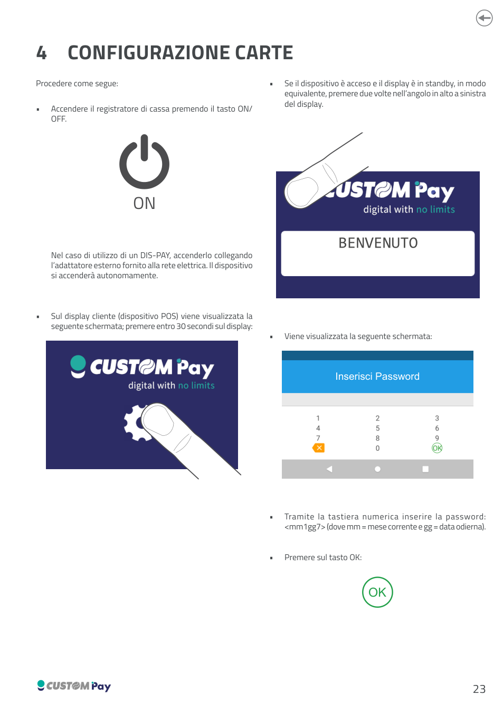
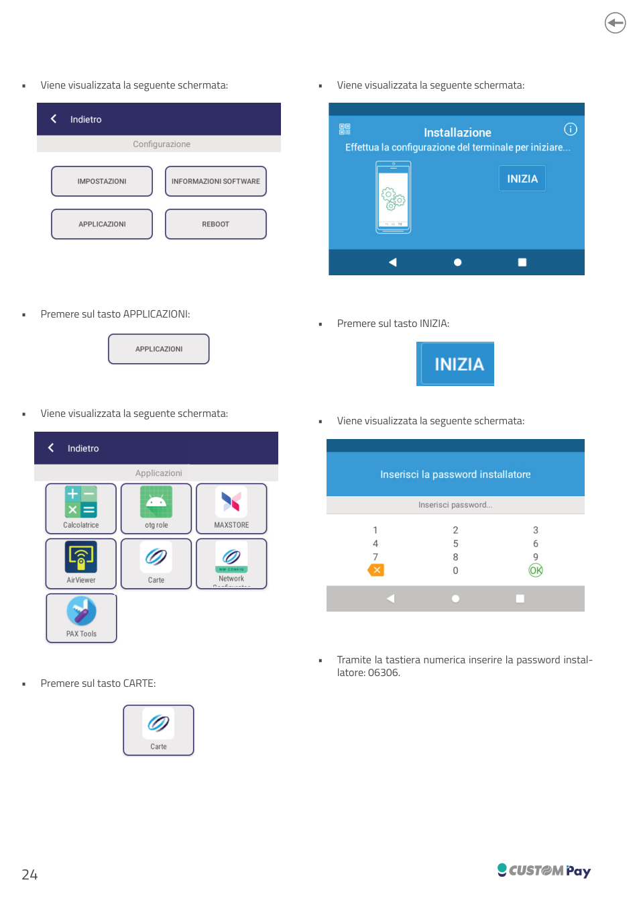
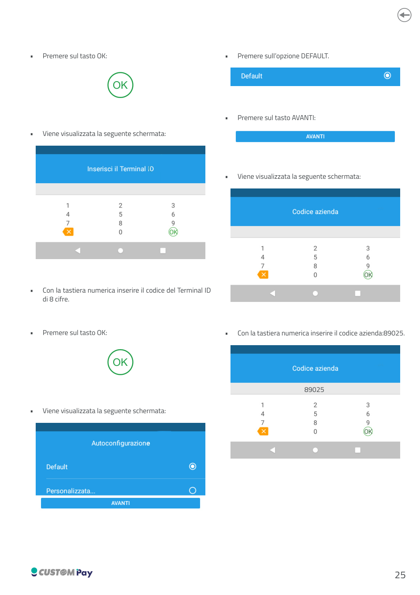
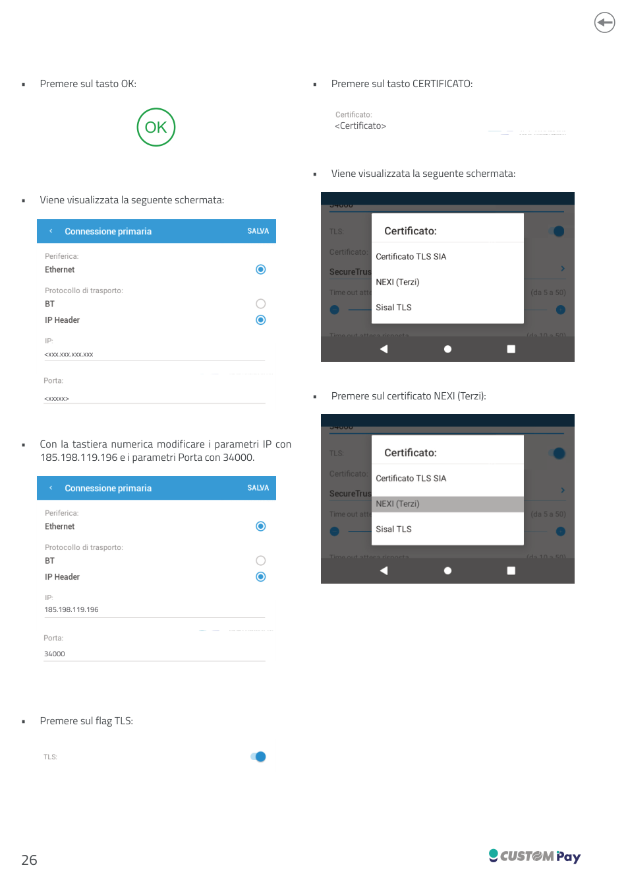
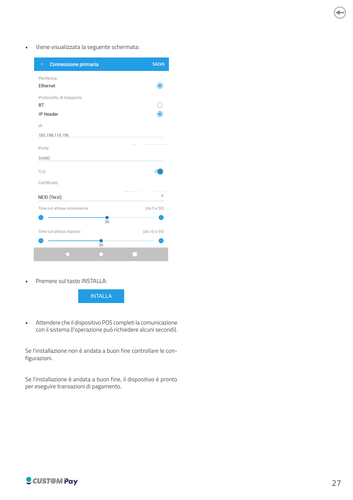

Configurazione carte
Procedura del manuale di configurazione del POS Q10A (Custom Pay) per installare l'applicazione CARTE sul POS: Terminal ID, codice azienda e parametri di connessione al sistema di pagamento.
Scarica il manuale completo (PDF)
Accesso al menù di configurazione del POS
-
Accendere il registratore di cassa premendo il tasto ON/OFF.
DIS-PAY
Nel caso di utilizzo di un DIS-PAY, accenderlo collegando l'adattatore esterno fornito alla rete elettrica. Il dispositivo si accenderà autonomamente.
-
Sul display cliente (dispositivo POS) viene visualizzata la schermata BENVENUTO di Custom Pay: premere sul display entro 30 secondi.
- Se il dispositivo è acceso e il display è in standby, in modo equivalente, premere due volte nell'angolo in alto a sinistra del display.
- Viene visualizzata la schermata Inserisci Password. Tramite la tastiera numerica inserire la password
mm1gg7, dovemm= mese corrente egg= data odierna. - Premere sul tasto OK.
Esempio
Il 22 ottobre la password è 101227.
Configurazione
1. Aprire l'applicazione CARTE
- Viene visualizzata la schermata Configurazione con i tasti IMPOSTAZIONI, INFORMAZIONI SOFTWARE, APPLICAZIONI e REBOOT. Premere sul tasto APPLICAZIONI.
- Viene visualizzata la schermata Applicazioni (Calcolatrice, otg role, MAXSTORE, AirViewer, Carte, Network, PAX Tools). Premere sul tasto CARTE.
- Viene visualizzata la schermata Installazione ("Effettua la configurazione del terminale per iniziare..."). Premere sul tasto INIZIA.
- Viene visualizzata la schermata Inserisci la password installatore. Tramite la tastiera numerica inserire la password installatore:
06306. - Premere sul tasto OK.


2. Terminal ID e autoconfigurazione
- Viene visualizzata la schermata Inserisci il Terminal ID. Con la tastiera numerica inserire il codice del Terminal ID di 8 cifre e premere OK.
- Viene visualizzata la schermata Autoconfigurazione, con le opzioni Default e Personalizzata.... Premere sull'opzione DEFAULT.
- Premere sul tasto AVANTI.
- Viene visualizzata la schermata Codice azienda. Con la tastiera numerica inserire il codice azienda
89025e premere OK.

3. Connessione primaria
Viene visualizzata la schermata Connessione primaria, con i seguenti campi:
| Campo | Valore |
|---|---|
| Periferica | Ethernet |
| Protocollo di trasporto | IP Header (selezionato; l'alternativa è BT) |
| IP | xxx.xxx.xxx.xxx (da modificare) |
| Porta | xxxxx (da modificare) |
- Con la tastiera numerica modificare i parametri IP con
185.198.119.196e i parametri Porta con34000. - Premere sul flag TLS.
- Premere sul tasto CERTIFICATO. Viene visualizzato l'elenco: Certificato TLS SIA, NEXI (Terzi), Sisal TLS.
- Premere sul certificato NEXI (Terzi).
- Nella schermata finale controllare i campi: IP
185.198.119.196, Porta34000, TLS attivo, Certificato NEXI (Terzi), Time out attesa connessione (da 5 a 50, valore mostrato: 30) e Time out attesa risposta (da 10 a 50, valore mostrato: 30).


4. Installare
- Premere sul tasto INSTALLA.
- Attendere che il dispositivo POS completi la comunicazione con il sistema (l'operazione può richiedere alcuni secondi).
Esito dell'installazione
Se l'installazione non è andata a buon fine controllare le configurazioni. Se l'installazione è andata a buon fine, il dispositivo è pronto per eseguire transazioni di pagamento.
Riepilogo parametri
| Parametro | Valore |
|---|---|
| Password dinamica di accesso | mm1gg7 |
| Password installatore | 06306 |
| Terminal ID | codice di 8 cifre |
| Autoconfigurazione | Default |
| Codice azienda | 89025 |
| Periferica | Ethernet |
| Protocollo di trasporto | IP Header |
| IP | 185.198.119.196 |
| Porta | 34000 |
| TLS | Attivo |
| Certificato | NEXI (Terzi) |